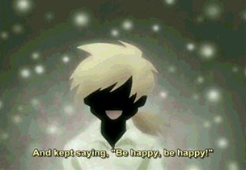

This is the story of the most foolish traveler in the world.
Once upon a time, there was a foolish traveler who had gone on a journey. Why was he foolish? Well, because he was fooled by everyone he met!
Everywhere he went, people made up all kinds of sad stories to tell him, and the traveler fell for every one of them.
Please, some money for medicine…?
I have a sick younger sister…
I don’t have money to buy seeds to plant in my fields.
Pretty soon, his money, his clothes, even his shoes had been cheated away from him.
However, the foolish traveler was always glad to help. For everyone of them, he’ll smile and say, “I wish you happiness.”
But by this point, the traveler was completely naked, and with nothing left to cover himself, he decided to leave the main road and travel through the dense forest, where no one could see him…
Soon, he was discovered by the goblins that lived in the woods. The goblins wanted to eat the traveler’s body, so they begged and pleaded, and used kind words to try and trick him…
Of course, the traveler was fooled. First, he let the goblins eat one of his legs. Then an arm. Then more and more...Before it was over, all that the traveler had left was his head. He’d even given his eyes away to the last of the goblins…
And as the last goblin was eating the traveler’s eyes, he turned and said, “Thank you, traveler. In return, I leave you this present.”
What the goblin left was a slip of paper, with the word fool written on it. The traveler couldn’t see it. He didn’t know what it was. Even so, tears began to flow down his face. “Thank you,” he said, “This is the first present anyone ever gave me. I’m so happy. I’m so happy. Thank you.”
Even without his eyes, he cried and cried great tears of joy. Then, the traveler died, with a smile on his face.
And that’s…The end of the story.
Momiji's thoughts on the story
I close my eyes and think about him a little bit longer. I think about how he had given everything away, until all he had left was his head…and how at the end, he still cried for joy as he said "Thank you."
And then I realize…I feel sorry for him.
See? Loss, hardship, things like that? You can’t only focus on them. The traveler didn’t…He never thought about his own troubles at all.
I imagine that it probably does sound really foolish to some people. But I don’t think he’s foolish at all. Even though other people probably think he was being tricked? I don’t think he was. I think he did exactly what he wanted to do.
I think, more than anything, he just wanted to make others happy.
What do you think? Really? Is that foolish? When you close your eyes and think about it, is that what it is?
(Episode 11, Fruits Basket ~ A rare gem of an anime)